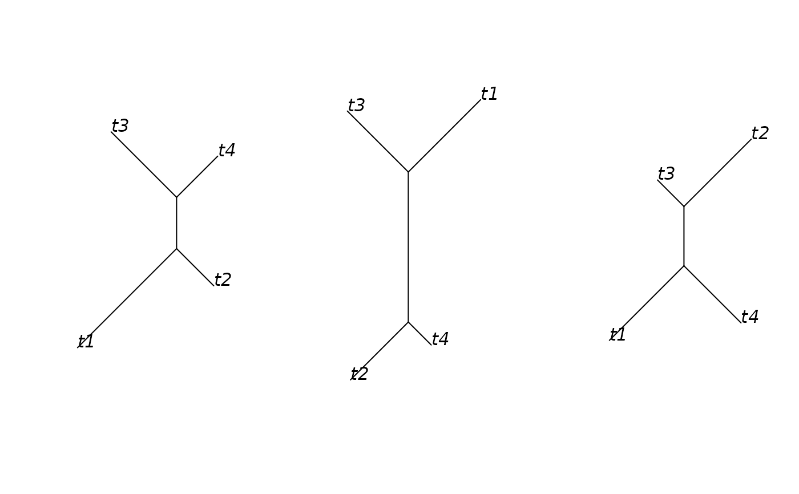

summaryBrlen: Summarise branch lengths on trees with identical topology
Source:R/summaryBrlen.R
summaryBrlen.RdsummaryBrlen: Summarise branch lengths on trees with identical topology
Details
This function can be used on the output of topofreq from the $trees element in order to summarise the branch length on each topology set so that we have a single tree summarising both topology and branch lengths. Useful for depicting posterior tree density. Alternatively, it can be used with a single element provided that it is first enclosed in a list
Examples
# \donttest{
set.seed(1)
library(ape)
trl <- ape::rmtree(10, 4)
tpf <- topoFreq(unroot(trl), output="trees")
sumtrees <- summaryBrlen(tpf$trees, method = "median")
oldpar <- par(no.readonly = TRUE)
par(mfrow=c(1,3))
plot(sumtrees[[1]], type="unrooted", show.node.label=FALSE, cex=1.5)
plot(sumtrees[[2]], type="unrooted", show.node.label=FALSE, cex=1.5)
plot(sumtrees[[3]], type="unrooted", show.node.label=FALSE, cex=1.5)

par(oldpar)
# }